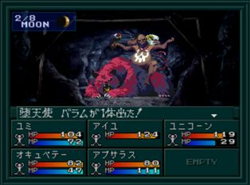

- 시설
- 공략
- BOSS:타천사 바람
- 분기
시설
- B1F : CB
- B2F : 회복, 사교의 관, 라그의 가게
- B3F : 감정가게(메모리 카드 보너스)
공략
나태계 B1F의 입구 부근의 방에 있는 다크 아저씨와 이야기하면
출현하는 악마가 다크계가 된다.
다시 이야기하면 원래대로 돌아간다. 처음에는 다크계로 레벨을 올리고 레벨이 오르면 되돌려 중마를 늘리는 것이 좋다.
B3F은 악마의 인카운트률이 매우 높다. 편하게 진행하기 위해서 에스트마(エストマ)를 사용하는 중마를 만들면 좋다.
추천 조합
Lv14 마수 카시 × Lv16 요정 엘프 = Lv19 성수 유니콘
(소재가 되는 악마는 B3F에서 출현하며 다크 아저씨를 통해 일반으로 돌려놓아야 출현한다.)
여기서는 땅굴을 파야 진행할 수 있는데 땅굴은 땅굴 입구의 학생과 파수꾼(番人) 대화를 하면 그다음부터 월령이 진행될 때마다 하나씩 파 들어간다. 한 단계가 지나가면 다시 맵 중앙의 파수꾼과 대화를 하면 진행된다.
- 땅굴 파는 학생과 대화, 맵 중앙의 파수꾼과 대화
- 걸어 다니다가 월령이 2~3단계 정도 지나면 맵 중앙의 파수꾼과 대화(파수꾼이 있는 장소로 가면 자동으로 대화가 시작된다.)
- 땅굴 한 칸을 판다.
각 땅굴의 칸 수는 6칸이므로 반복하다 보면 끝나게 된다.
- 북쪽의 땅굴에서는 귀중품 <洗わずのまわし>를 입수할 수 있다. 나태계를 클리어 후 학교 스모부에 가지고 가면 검<羆の軍配>로 교환할 수 있다.
- 남서쪽에 교장 선생님이 있는 땅굴을 파면 끝 부분에 감정 가게가 나온다. 여기서는 아틀라스社의 PS 메모리가 있으면 추가 보너스를 얻을 수 있는 장소다. 자세한 것은 메모리 체크 보너스를 참고.
- 10시 방향에 있는 땅굴은 BOSS:타천사 바람이 있다.
- 바람을 쓰러뜨린 후 8시 방향에 있는 땅꿀에서 링을 획득하자.
BOSS:타천사 바람

| 이름 |
Lv36 堕天使バラム |
| HP |
455 |
| 마법/특기 |
ジオダイン／マハジオンガ／デカジャ／押し潰し／暴れまくり／バインドボイス／パララアイ |
분기
나태계를 클리어하면 파트너에 따라 분기가 생긴다. 파트너가 찰리라면 분노계, 파트너가 유미 또는 레이코라면 질투계에 갈 수 있다.